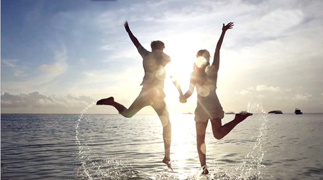
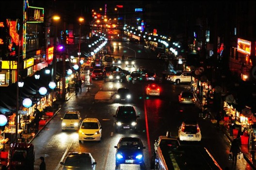
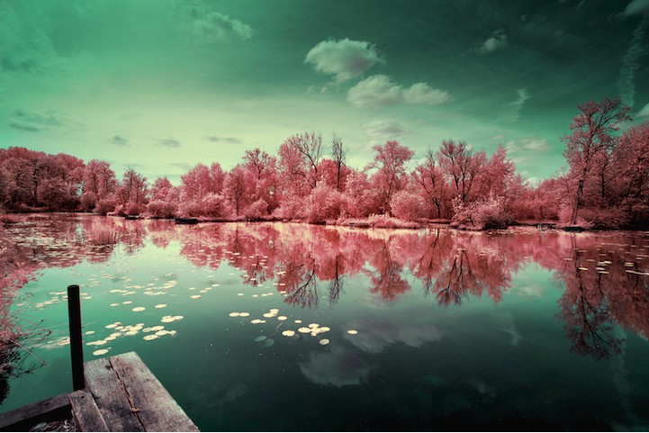

在路上
I have got everything ready for the trip.
对于身处银河系荒凉偏僻的旋臂上，微小的太阳星系中，一颗渺小蓝色星球上，尘埃一样微不足道的我们，在这个狭小的世界上旅行能有什么意义？
在宇宙的时间长河里，我们不过百年的一生又有什么意义？
旅行令生命重放异彩
不必计划太多，随处是风景随处可休息
她给人的感觉总是朴素、淡雅，带有别致的东方韵味，又隐含着内在力量。经历过悲剧与痛苦的她，曾在随后的七年里沉浸在悲伤的世界里与自己的内心对话，这让她意识到有一种东西比生命更强大——艺术。从此之后她背起沉重的器材，不停地旅行，走出了悲伤，也领悟了生命的奥秘。艺术的深度在她所经历的苦难中被扩展，又在旅行中转化为新的能量。在她人生最低潮的时候，正是旅行拯救了她，令她重新拾得快乐。
item1
item2
item3

带上爱的人去旅行
I have a dream, you can go around the world with my favorite people, every corner of the world has left footprints of our love, let her know that I love her, make her feel happy.
熙攘人群中的放纵
The meaning of travel is not the trophy how many photos are a few attractions to occupy a few,but,you do more crazy things,and experience which the heartbeat of the moment,and whether to see more.


将灵魂投入自然
旅行会让人谦卑，你会知道地球之大，永远有着与你截然不同的人、事、物在地球的彼端发生。见的世面广了，也就不会把自己局限在小格局里，不再愤世嫉俗，与人为敌。所以，旅行永远是最好、最有效的心理治疗。